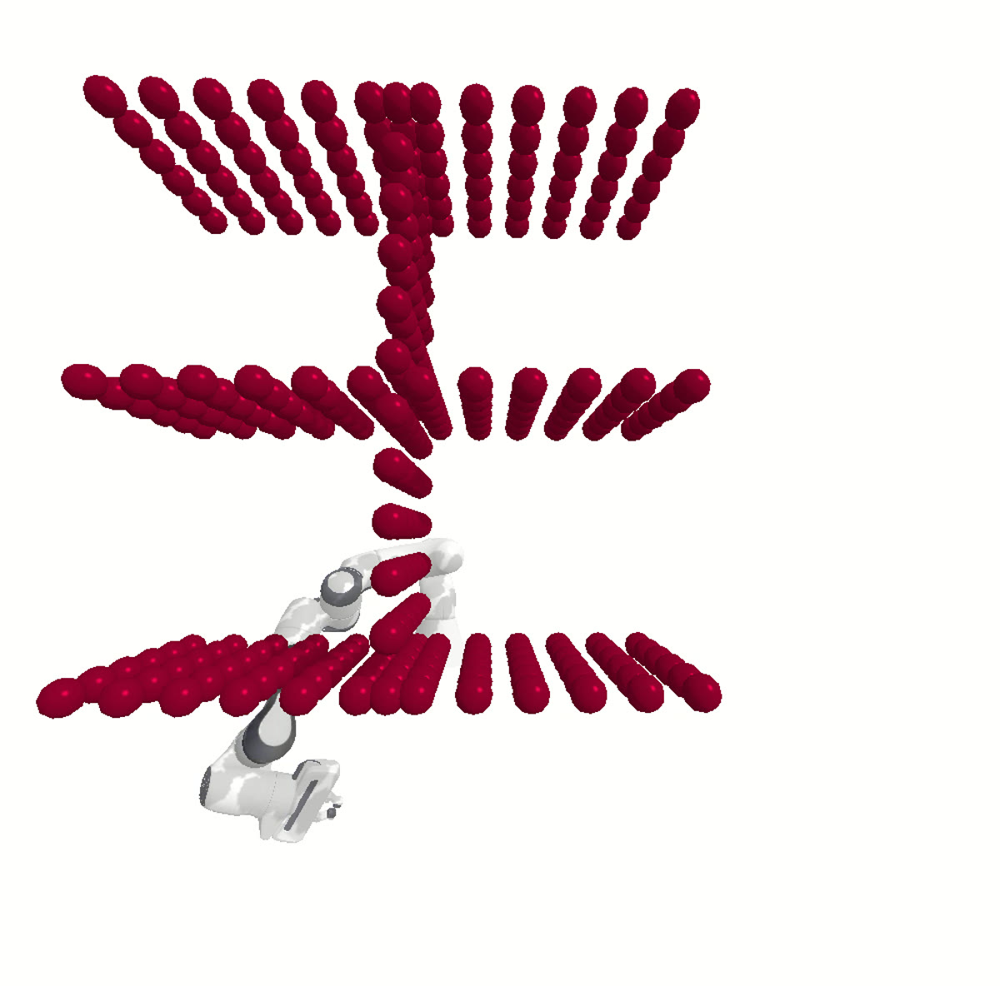
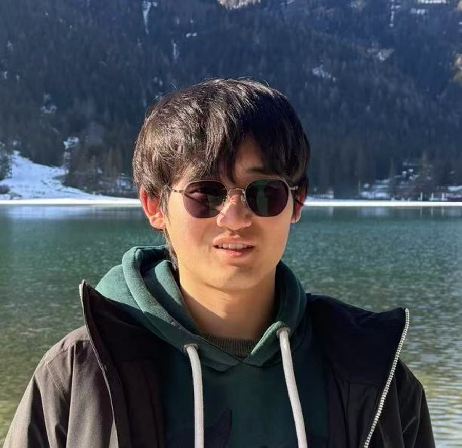

Obstacle-aware manipulation
Configuration-space distance fields and coupled dynamical systems for safe, efficient robot motion.
Research detailsM.Sc. student at Aalto University
Robotics · Control · Learning
I am Zimeng Wang, a robotics researcher and engineer focused on obstacle-aware manipulation, motion planning, and learning-based control. My work connects mathematical structure with systems that can be tested in simulation and on hardware.

From Shenzhen to Helsinki to Lausanne, following hard robotics problems.
Current
AaltoM.Sc. in Control, Robotics and Autonomous Systems
Research
LASAVisiting project on coupled dynamical systems at EPFL
Foundation
SUSTechB.Eng. in Robotics Engineering, top 10%
Build stack
ROS + MLPython, C++, PyTorch, simulation, and control
What drives me
I enjoy problems where elegant mathematics must survive contact with a real robot: collision geometry, imperfect sensing, hardware limits, and the long tail of integration work.
My current work explores configuration-space distance representations and dynamical systems for safe manipulation. Earlier projects took me through decentralized multi-agent planning, Spot digital twins, reinforcement learning, and wheel-legged robot control.
Selected work

Configuration-space distance fields and coupled dynamical systems for safe, efficient robot motion.
Research details
A real-to-simulation pipeline driven by live Spot state and human motion captured with OptiTrack.
Project details
Control experiments across a RoboMaster wheel-legged platform, quadruped simulation, and legged robotics coursework.
Project detailsA path through robotics
How can robots act safely and intelligently when the environment refuses to be simple?
Built a foundation in robotics engineering through control, mechanical design, ROS, and a wheel-legged robot thesis.
Studying control, robotics, and autonomous systems while researching multi-agent planning and leading a Spot digital twin project.

Researching obstacle avoidance with coupled dynamical systems and learned distance representations.
I am interested in research and engineering collaborations at the intersection of learning, control, and physical systems.
Start a conversationField notes
Loading notes...
Contact
I am always glad to discuss research, practical robotics systems, and thoughtful collaborations.